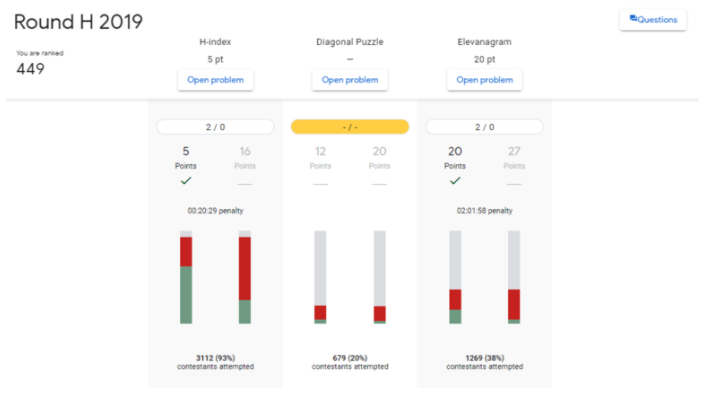
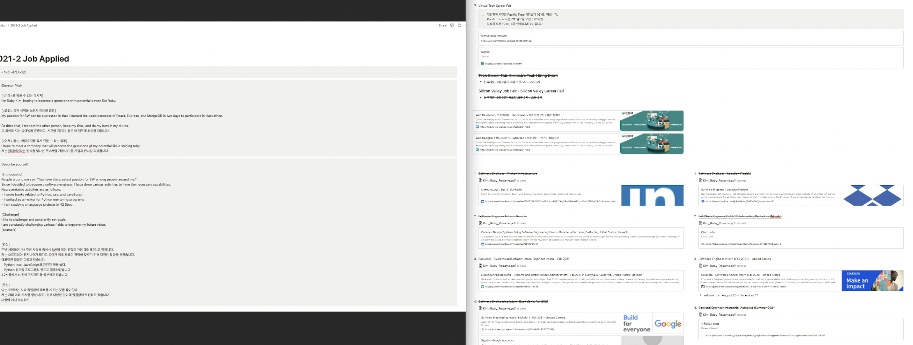
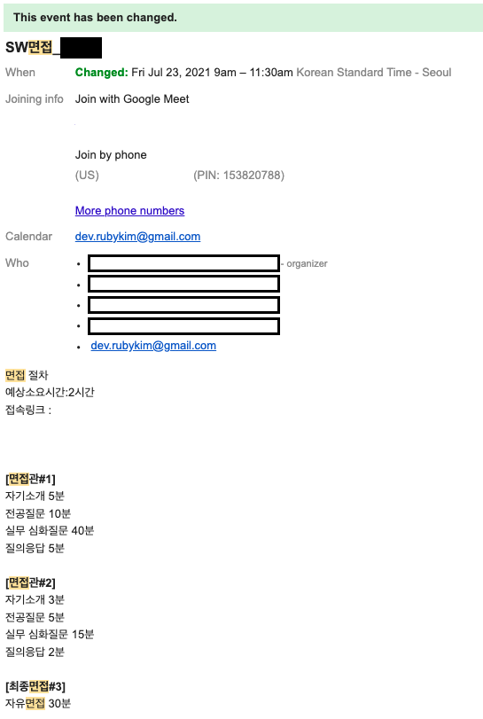
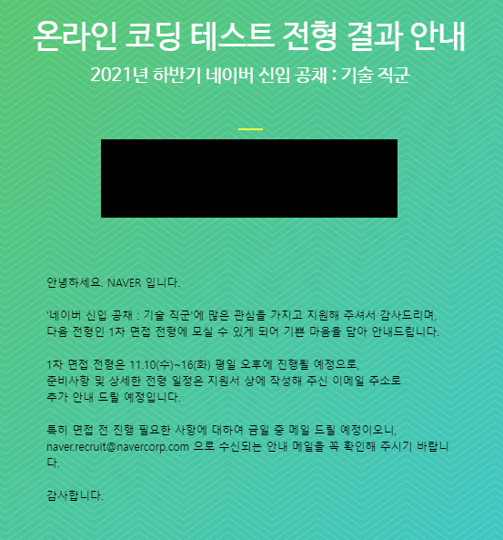
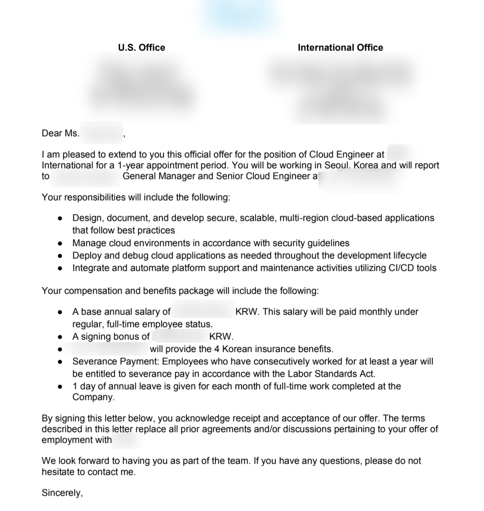
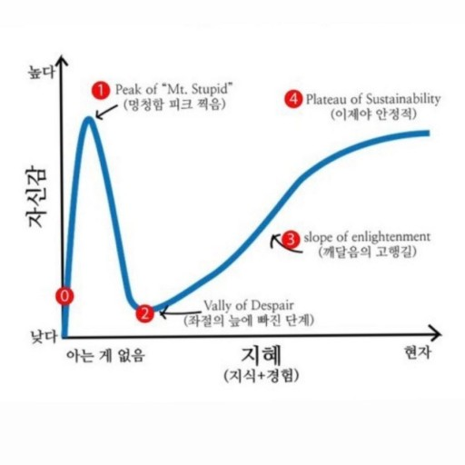

1. 👩🏻💻 내가 개발자…?
대입준비를 하면서도 컴퓨터는 단 1도 생각하지 않았지만 현실부정을 하기엔 이미 대학교 등록까지 마쳐버렸다.
결론적으로 소프트웨어학과에 입학했으니 한 번 해보자며 도전했는데 글쎄, 다들 한 번에 합격하던 학교 c언어 인증시험을 2번이나 낙방했다.
이 때 컴퓨터에 대한 재능이 그렇게 뛰어나지 않은걸 깨달아 다른 길을 찾으려 했지만 바늘 구멍보다 더 좁은, 취업이 힘든 이 시국에 내가 배운거라곤 컴퓨터밖에 없어 결국 개발자의 길을 반강제적으로 선택하게 됐다.개발자로 취직한다라고 내 자신을 납득시키고 인정하도록 만드는게 가장 어려웠던 것 같다.
2. 🎯 세부 진로 선택 + 스펙 쌓기 = 대외활동
개발자로 목표를 잡았으니 풀스택, 안드로이드, 데이터사이언스 등 세부 진로를 잡아야 하는데 컴퓨터 분야가 너무 넓어 도저히 선택을 할 수 없었다.
그나마 재능 있는 분야로 가야할 것 같은데 배울 내용이 너무나도 많았고, 가뜩이나 머리도 좋은 편이 아닌데 아르바이트 + 학교(21학점) 병행으로 온전히 학습에 집중하기 어려운 환경이었다.
그래서 효율적인 학습방안을 고안했는데 그게 바로 대외활동이였다.
왜 대외활동?
돈 없는 학생 입장에서 무언가를 무료로 배울 수 있다는 것, 가끔은 활동비도 준다는게 매우 긍정적으로 보였다.
그리고 대학생이 되었으니 그 때만 받을 수 있는 혜택 최대한 다 받아봐야 하지 않겠는가 싶었다.
대외활동 종류
- 제주코딩베이스캠프 10기 (2019년 상반기) 책1 책2
3년에 한번 들어갈까 말까하는 페이스북 계정이 있는데, 갑자기 생각나 잠시 들어갔더니 친구 한 명이 제주코딩베이스캠프에 좋아요 표시를 남긴게 피드에 뜨면서 자연스레 알게 되었다.
아무것도 없는 스펙이라 진심을 담아 지원서를 썼더니 운좋게 합격했다. (뭔지는 모르겠지만 1장 썼는데 합격했다. 반면 10장 넘게 쓴 사람은 떨어졌다고 한다. 운영진 말로는 지원이유에 포커싱을 잘 맞춘 지원자를 뽑았다던데 내껀… 잘 모르겠다.)
가서 파이썬 자동화 수업을 들으며 이왕 잡은 기회 틈틈히 엿보다가 운 좋게 책 2권을 공동집필 및 출판했다. - 네이버 BOOSTER (2019년 하반기)
네이버의 부스트코스를 수강하던 중, 부스트 코스 홍보대사를 뽑는다는 공지를 보고 지원했다.
당시 블로그 운영에 집중하고 있던터라 일방문자가 100명 정도 됐는데 그 덕에 합격한 것 같다.
덕분에 안드로이드 코스를 수강하며 무료로 전문가 첨삭을 받을 수 있었다. 1회에 3만 5천원 정도였던 걸로 기억하는데 홍보대사로서 대차게 잘 활용했던 대외활동이다. - HUFS IT (2020년 하반기)
이 프로그램은 취준생 + 창업을 위한 사람을 뽑는 곳이다. 처음에는 3학년이라는 이유로 떨어졌는데, 4학년에 다시 지원하니 붙었다. 인공지능과 블록체인에 대한 수업을 들었는데 전부 이론관련 내용이었다. 여담으로 중간에 자소서 첨삭 등도 봐주셨는데 유익했던 것 같다. - 대코캠(대학교 코딩 캠프) 서포터즈 1기 (2021년 하반기)
당시 코드잇에서 DB 강의를 들었는데 지금까지 들었던 수업 중 가장 쉽고 머리에 쏙쏙 박히는 설명에 열심히 수업을 수강하던 중이었다. 수강 만료 기간이 다가와 아쉬워하던 차 대코캠 서포터즈를 하면 추가 수강권을 준다고 하여 지원했고, 덕분에 수강권을 받아 추가로 수업을 더 들을 수 있었다. - JE코베 서포터JU 2기 (2021년 하반기)
제주코딩베이스캠프에서 주최하는 서포터즈 활동으로, 제코베에서 만든 강의들을 모두 무료로 제공해준다 하여 지원하고 열심히 수강했다. 여기서 Django 수업을 많이 수강했다.
대외활동 합격팁
대부분의 대외활동들은 자기 기업 PR을 위해 진행한다.
따라서 효과적인 기업홍보를 할 수 있는 방안을 미리 만들어놓는 것이 좋다.플랫폼에 상관없이, 미리 약간의 콘텐츠를 업로드하여 어느 정도의 방문자를 만들어 놓는 것이 관건이다.
각 대외활동에서 중요시 보는 부분 파악하기
각각의 기업마다 중요시 하는 부분이 다르다.
봉사같이 남에게 선한 영향력을 끼칠 수 있는가, 아니면 취업이나 창업에 관심이 있는가 등 다양한 조건을 가지고 지원자의 합불을 결정한다.
이는 주최사의 회사이념이나 창업자의 가치관을 보고 쉽게 판단할 수 있는데, 보통 인터넷에 검색하면 자료들을 찾을 수 있으니 이것저것 한 번 검색해보는걸 추천한다. 대외활동 사이트에 있는 사람들의 후기들을 통해서도 살펴볼 수 있다.
대외활동 사이트 추천
여러 대외활동 사이트가 있는데, 대부분의 대외활동 사이트에 동일한 내용이 올라오기 때문에 사이트는 하나만 추천하려고 한다.
- 요즘것들
시중에 나와있는 대외활동 사이트 중 가장 깔끔한 UI로 구성됐다. - 공모전 & 대외활동 알림 repository
42SEOUL을 하면서 잠깐 사람들 모아 진행했던 프로젝트다. 3일에 1번 대외활동 사이트를 크롤링하여 issue를 자동 open/close하도록 설정했다.
그 외 스펙을 위한 활동
이왕 쓰는거 오직 스펙 쌓기를 위해 참가했던 프로그램 및 대회에 관해서도 적어본다.
- 학교 연구실 인턴 (2019년 상반기)
이왕 대학생이 된거 대학원 비스무리한 생활도 해보고파 방법을 찾던 중 학교에서 연구실 인턴을 뽑는다는 공고문을 보고 지원했다.
교수님과 면접을 봤는데 좋게 봐주셔서 인턴으로 들어갔다. 그런데 인턴이라 그런가 너무 프리하게 놔주시더라.
뭔가 교수님이 하라는대로 하는데, 결과물을 내놓아도 그에 맞는 페이나 결과 등.. 내게 남는 것이 전혀 없어서 결국 나왔다. - 고교 SW멘토링 (2019년 상반기)
바쁠 것 같아서 처음에는 안하려고 했는데 친구의 권유로 참가했다. 여름방학에 2주 정도 고등학교에 방문해서 파이썬을 가르쳤다. - 학교 교내 SW/AI 해커톤 (2018년 하반기 / 2019년 상반기 / 2020년 상반기)
맨 처음 해커톤은 아무것도 모르는 상태에서 야식 공짜로 먹으러 참가한거라 아무 소득없이 1차에서 바로 탈락했다.
나머지 해커톤에서는 상을 받았는데, 먼저 2019년도 해커톤은 당시 인공지능 프로젝트에서 사용했던 모델 그대로 사용해도 괜찮겠다는 생각이 들어 참가했고 운 좋게 상을 수상했다.
그 다음해에는 서로 합이 맞은 친구들과 같이 해커톤에 참가하여 수상했다. - 2019년도 K-SW Purdue Program (2019년 하반기)
정부 지원으로 전공공부와 더불어 외국생활을 할 수 있다는 것에 감명받아 열심히 준비했다. (원래 외국에서 일해보고자 하는 꿈을 갖고 있었다.)
당시 OPIc 성적이 IL과 IM1을 받을 만큼 그닥 좋지 않아 영어 면접 질문 답변 리스트를 빽빽이로 5장 정도 준비했던게 기억난다. - 42SEOUL (2020년 하반기)
온보딩 신청은 2019년 11월에 바로 했는데, 당시 K-SW Purdue Program으로 외국에 있어 일부러 2기로 신청했다. 원래라면 2020년 3월 즈음에 라피신을 진행해야 했지만, 코로나로 인해 연장이 되면서 7월부터 라피신을 진행했다. 최종합격 이후, 9월부터 본격적으로 42SEOUL 본과정에 합류해 프로젝트를 진행했다.
3. 🌸 스펙의 꽃, 인턴에 도전 + 정규직까지!
이렇게 대외활동들을 통해 어느 정도 기술을 습득했다. 하지만 학생과 직장인에게는 엄연히 큰 차이가 있다.
그 차이를 어느 정도 극복을 해놔야 나중에 취준할 때 도움이 될 것 같아서, 그리고 어떤 분야로 갈지 확실히 정하기위해 경험삼아 인턴십에 도전했다.
사실대로 말하면 학교가기 싫어서 인턴 도전했다. 제발 졸업시켜주세요
참고로 스타트업은 맨 앞 첫 글자만 작성했다. 아무래도 사람이 적은 스타트업 특성 상 회사 이름을 그냥 적어버리면 사람들이 누군지 눈치챌 것 같다는 느낌아닌 느낌이랄까 (될 수 있으면 조용히 살고 싶다)
Google Korea 인턴 (2019년 하반기): 불합격
당시 K-SW Purdue Program으로 미국에 있었는데, 경험삼아 도전해볼까?하며 했던게 면접까지 진출해버렸다(…)
포지션은 안드로이드 개발자였는데, 큰 이유는 없고 인턴 지원 당시 네이버 BOOSTER로 활동하며 공부했던 안드로이드가 내 최신 기술이었기 때문이다.
1차 코딩테스트 이후 서류를 가지고 합불을 가렸는데 코테결과가 나름 처참했음에도 서류가 좋아서 그런가 합격했다.
코딩테스트는 Kick Start에서 진행했는데, 알고리즘 보다는 무지성 + 노가다로 문제를 풀었다.

이후로는 1차 면접날, 면접관님과 ‘안녕하세요’와 ‘소리 잘 들리시죠?’ 이 두 마디 이후 바로 면접이 시작됐다.
소문으로만 들었던 외국계 면접이 이런거구나 체감했던 것 같다. 면접관님은 시종일관 면접에 관련된 질문만 던지시고 내 스펙, 성적 등 전부 관심이 없으셨다.
1차 면접은 거의 2차 코딩테스트였다. 특정한 자료 구조를 주며 구글 Docs에 직접 구현해보는 것이었는데, 솔직히 이런 문제가 나올줄 몰랐고 무엇보다 면접이 영어로 진행됐기 때문에 어버버 하면서 면접에 임했다. 당시 영어라곤 OPIc IM1이 다인, 자유롭게 영어로 얘기를 전혀 못하는 사람이었다. 그 때문인가 2차에서 결국 탈락했다.
기술면접이 끝나고 주니어 개발자로서 궁금한 내용이 있으면 물어보라는 얘기에 이런저런 얘기를 했는데, 좋은 말씀을 많이 해주셔서 도움이 됐던 것 같다. 여담으로 구글 코리아 지하의 운동시설이 그렇게 좋다는 정보를 얻었다.
Naver Clova 인턴 (2019년 하반기): 불합격
이 또한 K-SW Purdue Program으로 미국에 있을 때 갑자기 지원했던 인턴십이다.
당시 멘토님을 뵙고자 팀원들과 시카고로 갔는데, 교수님께서 카톡으로 네이버 클로바 인턴으로 추천해줄테니 한 번 지원해보지 않겠냐며 권유를 하셨다.
좋은 기회인 것 같아 급작스럽지만 서류와 포트폴리오를 열심히 준비했다. 그렇게 시카고 미술관 입구만 구경한 채 건너편 스타벅스에서 컴퓨터만 깔짝댔다.
당시 인공지능 관련 스펙이라곤 학교 프로젝트가 다였기에, 서류에서부터 떨어졌던 것 같다.
스타트업 M사 인턴 (2020년 상반기): 불합격
뭔 바람이 불었는지 갑자기 인공지능에 꽂혀 인공지능 개발자 포지션으로 국내 인공지능 스타트업으로 유명한 M사에 지원했다.
웃기게도 코딩테스트는 5문제 중 1문제(심지어 그 1문제의 테스트 케이스를 전부 맞추지 못했다)를 맞췄는데, 서류와 포트폴리오가 너무 잘 되어있어 궁금하다 하셔서 반강제로 1차에서 합격했다.
코딩테스트를 못 본 이유가 있었다. 다익스트라 같이 알고리즘 과목에 대한 깊은 지식이 있어야 풀 수 있는 문제가 출제됐는데, 당시 알고리즘을 아예 배우지 않은 상태에서 코딩테스트를 봤으니 점수가 처참했다.
면접에서는 추가적인 알고리즘 시험이 있었다. 파이썬 구현 문제였는데 정답이긴 하지만 10%정도? 부족한 답변을 내놓았다. 다만 다른 파이썬 문제는 의도대로 잘 풀었다.
다음으로는 프로젝트에 관한 면접이 진행됐고 차근히 잘 맞받아쳤던 것으로 기억한다.
다만 면접을 보시면서 자꾸 걱정하시던게 하나 있으셨는데, 바로 내가 그 당시 3학년 2학기를 준비하고 있었다는 것었다.
그 때문에 몇 번 망실이시는 모습을 보여주시더니 결국 최종에서 불합격을 받았다.
스타트업 D사 인턴 (2020년 상반기): 합격
이 회사는 풀스택 엔지니어로 지원했다. 위 M사와 동일하게 인공지능 개발자로 회사를 지원하고자 인터넷을 뒤졌는데, 인공지능 개발자로 4학년 이하의 학사를 뽑는 경우가 거의 없었다.
고민 끝에 인공지능 회사에 들어가서 어깨 너머로 배워야겠다라는 무대포 마음으로 무작정 인공지능 관련 회사에 아무 기술 포지션으로 지원했다.
전남에 있는 회사인데, 당시 코시국으로 뉴스가 난리났음에도 불구하고 직접 기차타고 오라 하길래 고민하다가 결국 비대면으로 면접을 봤다.
Django에서 손을 뗀지 1년이 넘어 아리까리했는데, 의외로 면접을 좋게 봤던 것 같다. 몇 문제는 제대로 답변을 못했지만 이런건 인턴으로 들어와서 다시 공부하면 되는거니까 걱정 마세요라며 인상 좋고 참 밝으시네요라며 시종일관 칭찬만 들었다.
지금이야 얘기하지만 사실 이 회사 면접은 형편없었다. 전부 알맹이가 빠진 질문들만 해왔기 때문이다.
위에 적었듯이 학교가기 싫어서 인턴을 지원했던터라 맨 처음에는 유일하게 합격한 여기로 인턴을 가고자 했지만, 바로 뒤에 후술할 회사 또한 합격해 이 회사는 결국 패스했다.
중견기업 S사 인턴 (2020년 상반기): 합격
최종적으로 2020년 상반기에서는 여기서 인턴십을 진행했다. 인공지능 개발자 포지션의 인턴을 뽑길래 지원했고 코딩테스트도 5문제 중 4문제로 무난하게 풀었다.
그런데 면접을 갔더니 이미 실장님께서는 나를 인턴으로 내정하신 상태였다. 면접을 보러갔는데 시종일관 칭찬만 들었다. 3학년인데 인공지능을 할 줄 알아요? 포트폴리오 너무 잘 만들었네요. 3학년 맞아요? 인사성도 좋고 인상도 좋고 아주 좋아요. 이번 인턴은 기대되는데요? 눈 앞에서 직격타로 칭찬을 들으니 낯간지럽고 그냥 그 자리를 벗어나고 싶다는 생각만 들었다.
회사는 음성인식 관련 인공지능을 개발하는 곳으로, 인터넷에 Open 음성인식 API를 찾아 돌아다니면 종종 볼 수 있는 곳이였다. 이 회사가 위 D사보다 규모도 더 크고, 무엇보다 인공지능을 배울 수 있다는 생각에 여기를 선택했다.
외국계 기업 인턴 & 정규직 88개: 1승 87패 (2020년 하반기 - 2021년 하반기)
주변 사람들에게 누누히 얘기했지만, 해외에서 바로 취직하고 싶다는 마음에 학교 졸업 프로젝트를 하면서 시간이 날 때마다 기업에 지원했다. (비자 때문에 일찍 지원하는게 맞다고 생각했다.)
원래 계획은 ICT 프로젝트 인턴십 해외과정 합격 -> 실리콘밸리 입성 -> 정규직으로 전환 후 알박기였는데, 맨 처음인 ICT 프로젝트 인턴십 학교 선발에서부터 불합격을 받아버렸다.
영어회화가 문제인 것 같아 하루에 6시간 이상을 혼자 영어로 떠들며 열심히 준비했더니, 2021년 하반기 과정 참여 대학 리스트 중 재학 중인 학교가 없어 결국 지원하지 못했다.
그래도 한 번 휴학을 한 탓에 내게는 4학년 2학기 과정이 남아있었고, 아직 졸업을 하지 않았으니 지금 이 순간에는 내가 하고 싶은대로 기업에 지원을 해보자며 여러 외국계 기업에 이력서를 뿌렸다. 하도 많이 제출해서 잊어버릴까봐 Notion으로 리스트를 작성했다. 종종 면접 예상 질문 및 답변들을 추가하고 수정하며 결과를 기다렸다.

그리고 당연하겠지만 돌아오는 메일이 없었다. 간혹 한 장씩 날라오면 전부 Unfortunately…로 메일이 시작됐다.
이 때 쯤에는 외국계 기업이라는 목표를 거의 포기했었다. 애초에 외국계 기업 TO가 적으니 당연한거지..라며 납득하고 있던 찰나, 운 좋게 미국 스타트업의 한국지부에서 인턴을 뽑는다는 소식을 들었다.
이게 마지막이다 하면서 포트폴리오와 이력서를 다시 재정비했고, 운 좋게 면접까지 모두 합격하여 인턴으로 선발됐다.
아직도 생각하면 운이 정말 좋았던 것 같다. 하루 전에 영어로 2시간 30분 동안 기술 + 인성 면접을 본다고 통보받아 거의 자포자기 했는데, 면접관들께서 너무 좋게 봐주셨다.

국내 기업 정규직 12개: 11승 1패 (2021년 상반기 - 2021년 하반기)
국내 기업에서는 대승을 거뒀다. 해외와 상반되는 결과에 기분이 밍숭맹숭했다.
참고로 1패는 네이버인데, 코딩테스트를 합격했지만 고민 끝에 면접을 보지 않아서 불합격으로 분류했다. 면접까지 봤으면 최종 결과가 어떻게 나왔을지 잘 모르겠다.

포트폴리오를 뜯어고치고 github를 즐기차게 꾸며놨더니 모든 회사들이 너무 마음에 든다며 만족해하셨다. 덕분에 코딩테스트를 노답으로 보더라도 포트폴리오를 이렇게까지 잘 만든 내가 궁금하다며 면접까지 강제로 합격되는 경우도 허다했다.
이렇게 정규직 포지션으로 기업을 합격했지만, 위에 외국계 기업에서 인턴으로 합격했기 때문에 이 모든 것들을 포기하고 외국계 기업 인턴을 선택했다.
최종 기업 선택 (2021년 하반기): 인턴 중인 외국계 스타트업 S사로 결정
인턴십을 진행했던 S사에서 배울 점이 많았고 모두가 친절했으며 무엇보다 외국계 회사 경험을 실제로 한다는게 내게 너무 꿈만같았다. 또한 다들 한국이 아닌 세상을 상대로 경쟁하는 사람인지라 엄청난 괴물급 스펙을 가진 인재들이어서, 여기에 있으면 여러모로 발전할 수 있겠구나 생각했다.
그래서 11월에 네이버 면접을 고민했지만, 결국 네이버를 포기하고 인턴 중인 S사를 선택했다. 인턴십이 끝나고 12월 말에 CEO와 간단한 온라인 미팅(면접)을 통해 정규직을 확정받았고, 2022년 1월부터 정규직으로 근무하기 시작했다. 그렇게 대학 졸업 1개월 전에 취뽀를 해버렸다.
아 맨 처음에 오퍼메일을 받았을 때 1-year appointment period라고 적혀있어 이건 뭔가 싶었는데, 알고보니 정규직이 맞고 1년마다 연봉 갱신한다는 의미에서 이 단어가 들어갔다고 하더라.

기타: 기업 찾기 & 고르기
기업 찾기
- jojoldu/junior-recruit-scheduler: 주니어 개발자 채용 정보
- milooy: 한국 자율/원격 출퇴근 회사 리스트
- gcreddy42/hiring2020: Internship status of companies - COVID-19
기본적으로 github에 검색을 해보면 정보가 많이 나온다. 대기업은 누구나 다 알테니 중소기업이나 (특히) 스타트업에 관심있는 사람들은 github를 활용하는 것을 추천한다.
기업 고르기 (feat. 좆소 거르기)
LinkedIn을 사용하는 직원이 많은 회사로 가자
좆소 기업들의 특징이 개발 직군에 대한 정확한 지식 없어 고나리질 을 한다는 것인데, 모든 좆소가 그런건 아니겠지만 대부분 국비지원 출신들이 고위직에 있을 경우 이런 사태가 잘 발생한다. 좆소 경험이 있는 지인에게 듣길, 1년 과정 국비지원 출신 상사가 4년제 컴퓨터공학과 출신 지인에게 ‘이렇게 일을 못하시다니 국비지원 수업 좀 들어보는거 어때요?’라며 큰소리를 치기도 했단다.국비지원이라도 기초부터 잘 공부해서 취직하면 할 말 없겠지만, 1년 정도의 커리큘럼 가지고는 CS공부를 했다고 말하기엔 다소 무리가 있다. 괜히 4년제 대학에 컴퓨터공학과가 있을까.
그 사람들은 더닝 크루거 효과의 멍청함의 피크(좆문가)의 단계에 있다. 즉 아무리 열심히 설명해도 자신이 무조건 맞으며 개발자의 말을 못 알아듣는 상황이다.
말이 길어졌는데 이제
LinkedIn에 대한 이유를 설명해보겠다. 개발자들의 이직 과정은 꽤 재밌다. 직접 다른 회사에 이력서를 제출하거나 헤드헌터들에게 이직 제안을 받고 바로 코딩테스트와 면접을 보는 경우가 허다한데, 대부분 능력있는 경력직군은 후자로 많이 이직을 선택한다.이 때 헤드헌터들이 사용하는 플랫폼이 무엇인가 알아야 하는데, 대부분이
LinkedIn을 사용한다. 그래서 능력있는 개발자들은 기본적으로LinkedIn계정을 갖고 있고, 그런 사람들이 많은 회사를 들어가면 SW를 제대로 공부한 사람끼리 서로 의사소통이 잘 되기 때문에 좆소와 매우 거리가 멀어진다.생각보다 도움이 안되는
기업 리뷰 사이트
대부분 회사를 지원할 때 잡플래닛, 사람인 등 기업 리뷰를 보게 된다. 그런데 막상 기업에 지원해보니 이 리뷰들이 솔직히 도움이 안됐다.
그 당시 사람들이 여러 이유로 고통을 받았다고 하더라도, 막상 들어가면 상황이 이미 다 정리되어 매우 편하게 회사생활을 할 수 있는 경우가 있었다. (주변 지인들 + 내 경험담)어떻게 생각해보면 당연한 얘기다. 굳이 리뷰 사이트에 들어가서 글을 남기는 사람이 있을까? 엄청난 애사심이나 증오심이 있지 않은 이상 대부분 귀찮다며 사이트 자체도 들어가지 않을 것이다. 당장 네카라쿠배에 들어가보면 별점이
3.8정도 되는, 생각보다 그렇게 높지 않은 평점을 확인할 수 있다.인터뷰 팁도 의외로 도움이 되지 않았다. 매년 바뀌는 문제, 바뀌는 면접관으로 적중률이 생각보다 높지 않았다. 굳이 나오면.. 포켓몬빵에서 피카츄 걸리는 확률로 기업 인터뷰 후기에 있는 문제가 나왔던 것 같다.
잠재성 있는 산업 분야 선택하기
입사를 하면 연봉 협상을 해야하는데 기업 입장에서는 최대한 적게, 신입 입장에서는 최대한 크게 연봉 협상을 진행해야 한다.대부분 회사들이 “우리 회사가 많이 어려워서요, 이 정도면 가능할 것 같습니다”라는 얼토당토 말도 안되는 방식으로 연봉 후려치기를 하는 경우가 많은데, 사전에 이런 말이 나오지 않도록 차라리
의료,교육등 미래잠재성이 큰 분야를 타겟으로 사업을 운영하는 회사를 선택하는 것도 좋은 방법이다.
미래 인류를 위한 사업으로 대회 상금이나 과제 따오는게 다른 분야보다 쉬운 편이고, 그만큼 자본금도 다른 분야에 비해 널널하기 때문이다.
(애초에 회사 사정이 어려운걸 우리가 왜 이해해야 하는지 잘 모르겠다. 회사가 어렵다? 그건 CEO 잘못이다.)참고로 이러한 분야를 선택한다고 해서 연봉이 극적으로 올라가는건 아니다. 연봉협상은 말빨이다. 말빨로 상대방이 정신차리지 못하도록 탈탈탈 호로록 털어버리는 것이다.
5. 📖 서류 & 인터뷰 준비법
(수정 중. 추후 업로드 예정)
6. 📚 최종 이력서 / 포트폴리오 / 기타 스펙
- (링크 수정 중. 추후 업로드 예정)
- 기타 스펙: OPIc IH (딱 하나..)
7. 💼 취업 이후로는?
학교 과제로 뻘뻘대던 시절이 끝나고, 나름의 인간으로서 권리를 누릴 수 있게 되었다. 이젠 하루에 3~4시간을 자게 되었다. 더 자야하는걸 아는데 몸뚱아리가 너무 고생해서 주인 말을 안듣는 반항아가 되었다… ㅠㅠ
회사 근무를 끝마치면 근무 관련 기술(AWS, React 등)이나 영어공부를, 그리고 부업(블로그, 유튜브 등)을 하고 있다. 또한 직업을 바꾸기 위해 이제는 이것저것 관심있는 분야를 하나 씩 건들면서 내 재능을 확인하는 중이다. 항상 얘기하지만 컴퓨터 하기 진짜 싫다 ㅠㅠ
이 글이 취업을 원하는 누군가에게 도움이 되길 바라며, 모두가 원하는 직종으로 빠르게 합격했으면 좋겠다.
![[MSA] Micro Service Architecture 개요](../../../../../coverImages/msa.png)
![[React.js] React 라이프 사이클](../../../../../coverImages/reactjs.png)